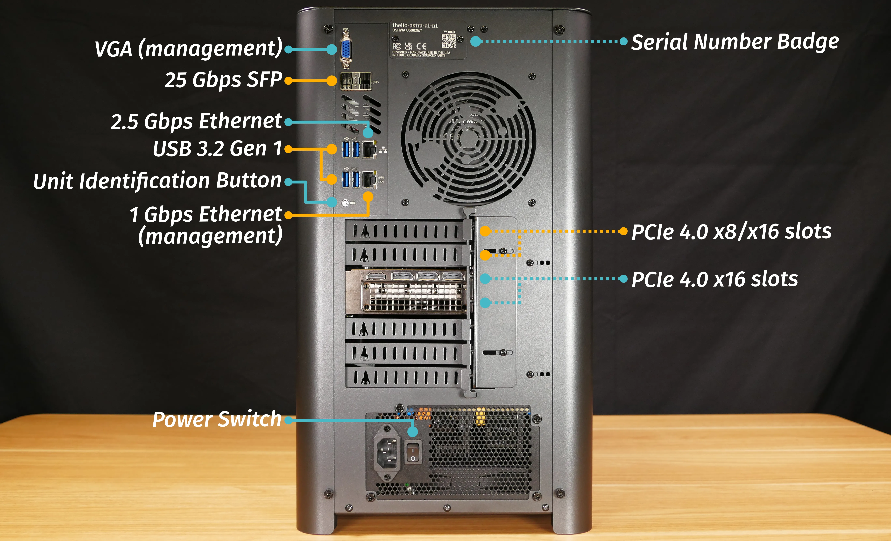
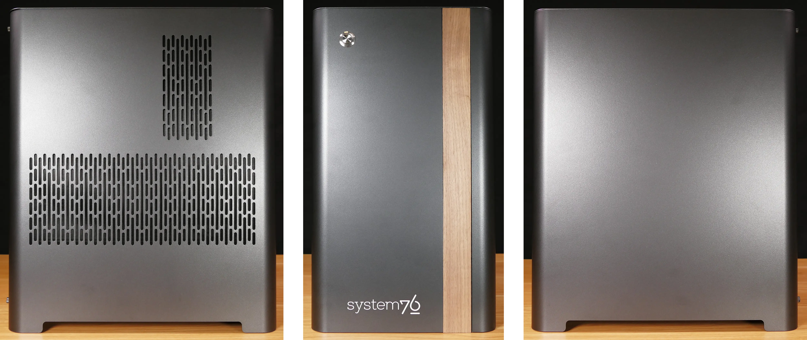
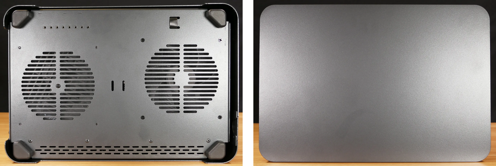

Thelio Astra (External Overview)
Back overview:

SFP Port Information:
- When ordering Thelio Astra revision A1 (with the
ALTRAD8UD2-1L2Qmotherboard), options for one or two 10GbE RJ-45 transceivers preinstalled into the 25GbE SFP port(s) are offered.- No transceivers are installed in the photo above.
- Thelio Astra revision A1.1 (with the
ALTRAD8UD-1L2Tmotherboard) includes two built-in 10GbE RJ-45 ports instead of SFP ports.
Unit Identification (UID) Button Guide:
- Pressing the button toggles the blue identification light on and off.
- The light can also be toggled remotely using the baseboard management controller (BMC).
- Holding the button for more than 4 seconds resets the baseboard management controller (BMC) to default settings.
- After resetting the BMC using this method, it may be necessary to power cycle the Thelio Astra before the BMC becomes reachable again.
PCIe Slot Information:
- The top two PCIe slots run at x16 bandwidth with Altra Max processor options, and run at x8 bandwidth with Altra (non-Max) processor options.
Power Switch Guide:
- 1: On
- 0: Off
Front/side overview:

Top/bottom overview:
